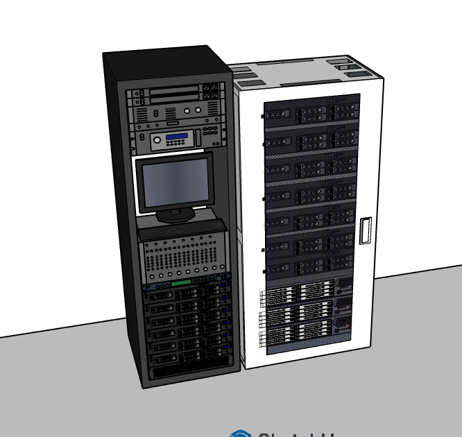
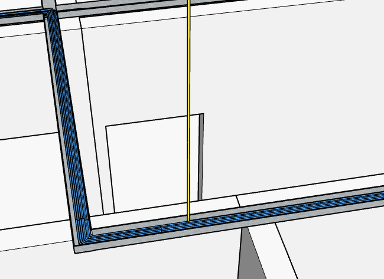

Infraestrutura de TI de alta performance para empresas do futuro
Projetamos e gerenciamos ambientes corporativos com foco em escalabilidade, redundância, cabeamento estruturado e máxima segurança lógica.
Engenharia de TI sólida para negócios em expansão
A TechCore atua como parceira estratégica no desenvolvimento e implementação de infraestrutura crítica de Tecnologia da Informação.
Nossa expertise abrange desde o planejamento físico da passagem de cabos e terminação óptica em SHAFTs técnicos até a configuração lógica avançada de Firewalls de borda, roteamento corporativo, redes virtuais segmentadas (VLANs) e matrizes de servidores integradas.
SYSTEM_STATUS: OPERATIONAL
TOPOLOGY: CORE-DISTRIBUTION-ACCESS
SECURITY_LAYER: ACTIVE (pfSense_Firewall)
ROUTING_ENGINE: ACTIVE (MikroTik_CCR)
BACKBONE: OPTICAL_FIBER_10G_OK
SEGMENTATION: 8_VLANS_CONFIGUREDSoluções Corporativas de TI
Cabeamento Estruturado
Projetos Cat6/Cat6A, organização de racks, patch panels, identificação norma TIA/EIA e certificação de pontos.
Fibra Óptica & Backbone
Lançamento, fusão e interconexão de enlaces ópticos verticais e horizontais via SHAFT técnico.
Arquitetura de Redes
Dimensionamento de redes LAN/WAN, switching gerenciável, atribuição de IP e otimização de tráfego.
Infraestrutura de Servidores
Estruturação de ambientes para aplicações críticas, serviços de diretório, arquivos e bancos de dados.
Segurança de Rede
Appliances de Firewall (pfSense), inspeção de pacotes, políticas de controle de acesso e regras perimetrais.
Desenvolvimento Web
Criação de sistemas e soluções web para empresas focados em performance, segurança e usabilidade.
Infraestrutura Física & Planejamento Espacial
Ambientes Planejados para Desempenho Técnico
A sede física da TechCore foi projetada visando otimização do fluxo de trabalho e isolamento térmico/acústico da Sala de Servidores (Data Center interno).
O layout contempla Recepção, Área Administrativa, Laboratório Técnico de Manutenção, Sala de Reuniões e o Data Center com controle estrito de acesso e passagem dedicada de infraestrutura.
Data Center / Sala de TI
Piso elevado, racks fechados, climatização de precisão e sistema de contenção de cabeamento.
Planta Baixa Oficial 3D
Clique para ampliar em alta resoluçãoCabeamento Estruturado & Backbone Óptico
01. Distribuição de Cabeamento
A rede horizontal utiliza topologia em estrela, interligando as tomadas de telecomunicações dos postos de trabalho aos Racks de Distribuição via cabeamento de par trançado de alta performance.
- Organização técnica via Patch Panels e Guides de cabos.
- Acomodação padronizada em eletrocalhas e canaletas técnicas.
- Identificação e etiquetagem dos pontos conforme padrão TIA/EIA.
02. Backbone Vertical via SHAFT
A interconexão do centro de distribuição principal com os pontos estratégicos da empresa ocorre através de um SHAFT de telecomunicações vertical dedicado.
- Enlaces de Fibra Óptica garantindo imunidade a ruídos eletromagnéticos.
- Tráfego de alta largura de banda para interconexão dos switches ao Core.
- Redundância de caminhos para tolerância a falhas na infraestrutura.
Fluxo de Distribuição por Shaft e Enlace Óptico
Arquitetura de Rede Corporativa
Fluxo lógico de tráfego projetado para inspeção de segurança na borda com pfSense, roteamento MikroTik no Core e comutação gerenciável Cisco.
Estrutura de 8 VLANs Projetadas
Detalhamento completo das 8 Redes Locais Virtuais (IEEE 802.1Q) com escopos IP, gateways e atribuição de portas nos switches.
Diretoria e RH
Isolamento do tráfego corporativo sensível dos setores de Recursos Humanos e Diretoria Executiva.
Aplicação SW-1ANDAR-B: Portas Fa0/7 a Fa0/10.
Administrativo e Operacional
Tráfego geral dos setores administrativo, financeiro, recepção e estações de trabalho operacionais.
Desenvolvimento de Software
Rede dedicada para a equipe de desenvolvimento e ambiente de testes de software sem afetar a produção.
TI e Suporte Técnico
Rede do setor de Tecnologia da Informação, Suporte Técnico, Coworking e monitores do NOC.
Aplicação SW-1ANDAR-B: Portas Fa0/1 a Fa0/6.
Infraestrutura de Servidores
Concentra os servidores centrais (Arquivos, Banco de Dados, AD/DNS, Web) no CPD com rigoroso controle de acesso.
Câmeras e Segurança
Rede exclusiva para o tráfego contínuo de vídeo de alta banda das câmeras IP e gravadores (NVR/DVR).
Visitantes / Wi-Fi Hóspedes
Acesso à internet para visitantes e dispositivos pessoais. Isolada de todas as outras VLANs corporativas.
Gerenciamento de Rede
VLAN nativa e de gerenciamento para acesso administrativo seguro (SSH, SNMP) aos Switches, Roteadores e Access Points.
Ativos de Rede e Servidores
Switches Gerenciáveis
Comutação e Distribuição
Responsáveis pelo agrupamento das 8 VLANs, suporte a trunking (802.1Q) e mapeamento de portas operacionais.
Roteador / Gateway Core
Gerenciamento e Inter-VLAN
Roteamento dinâmico entre sub-redes (VLANs 10-70), regras de NAT, controle de pacotes e gatilho de DHCP.
Firewall UTM / Perímetro
Segurança Operacional (VLAN 99)
Filtragem avançada de pacotes, bloqueio de ameaças perimetrais e gestão da interface WAN/Gerenciamento.
Central de Mídia e Projetos Virtuais
Navegue pelas abas para visualizar os tours virtuais 3D, simulação lógica e maquetes técnicas.
Tour Virtual 3D: Da Edificação ao Datacenter
Animação conceitual demonstrando a estrutura física e a integração dos ambientes da TechCore.
Animação TÉCNICA: Shaft, Eletrocalhas e Infraestrutura de Racks
Demonstração detalhada da infraestrutura física de cabos Cat6 azuis, fibra óptica e racks do Data Center.

Planta Baixa 3D
Clique para ampliarSala de Telecomunicação
Clique para ampliarEstação NOC & Ponto RJ45
Clique para ampliar
Racks de Telecomunicações
Clique para ampliar
Eletrocalhas & Shaft Vertical
Clique para ampliar
Planta Baixa 2D Oficial
Clique para ampliarPrecisa de um projeto especializado?
Fale com nossa equipe de engenharia para consultorias e orçamentos.